Base-mounted motors belt / gear drive
Less rotating mass and much simpler wiring — nothing spins with the frame.
Added mechanical complexity increases maintenance, and backlash or belt slippage introduces positioning error.
Capstone Project · Department of Electrical & Computer Engineering · University of Victoria
A compact, low-cost dual-axis clinostat that continuously reorients a biological sample so the direction of gravity averages toward zero — small enough to live inside a standard cell culture incubator, with all control electronics kept outside.
01 — About the team
We are a Biomedical and Electrical Engineering capstone team at the University of Victoria. Over two terms we took this project from a literature review to a working, instrumented machine — covering mechanical design, electronics, embedded firmware, desktop software, and experimental validation between the four of us.
ECE/BME 499 · University of Victoria
ECE/BME 499 · University of Victoria
ECE/BME 499 · University of Victoria
ECE/BME 499 · University of Victoria
02 — Background & need
Gravity is one of the few environmental variables biology has never been able to switch off. Removing it changes real things: cell growth, tissue structure, and gene expression all shift under microgravity, which makes it an important variable in tissue engineering, regenerative medicine, and space biology.
The problem is access. True microgravity means orbit, and orbital experiments are expensive, slow to schedule, and effectively closed to student and small-lab research. A 3D clinostat — also called a random positioning machine — offers a ground-based alternative: rotate a sample about two perpendicular axes so its orientation relative to Earth changes faster than the cells can perceive or adapt to.
Over time the gravity vector experienced by the sample averages out, producing a simulated microgravity environment on a laboratory bench.
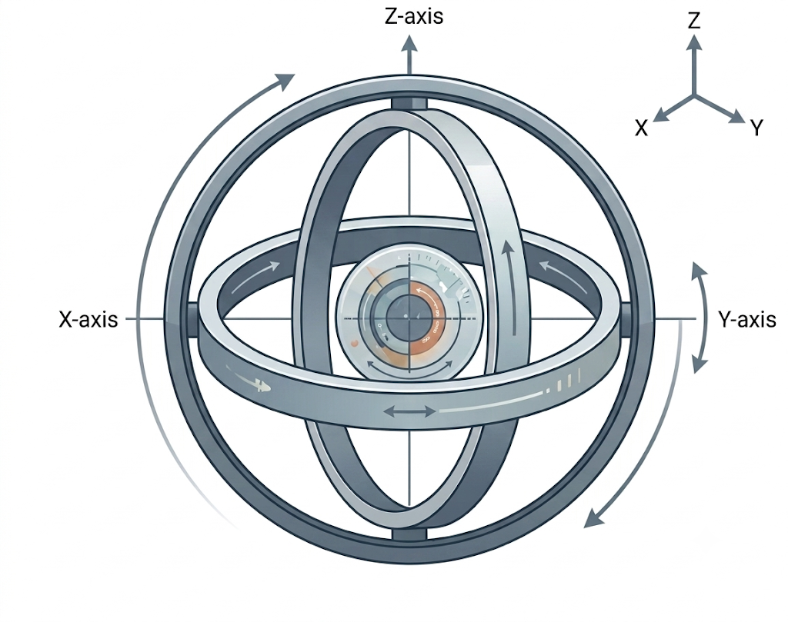
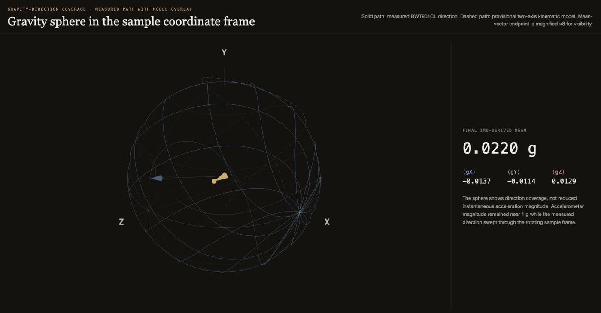
Commercial 3D clinostats are expensive and often too large to fit a standard cell culture incubator. What was missing was a compact, modular system that keeps the electronic controls outside the incubator while the motorized rotating assembly operates inside, under controlled temperature, humidity, and CO2.
03 — Design
Four objectives drove every decision, from material selection to the shape of the software's safety interlocks.
A compact assembly in biocompatible, heat-resistant materials, designed to keep operating in the humidity of a live cell culture incubator.
The internal motorized frame is separated from the controller and power electronics, joined only by sealed cables through the incubator port.
A removable rack system securely holds multiple tissue culture chambers and flasks, so samples can be swapped without disturbing the frame.
Independent low-speed rotation from 0.5 to 5 rpm on each perpendicular axis, commanded and displayed in physical frame RPM rather than motor-shaft RPM.
Less rotating mass and much simpler wiring — nothing spins with the frame.
Added mechanical complexity increases maintenance, and backlash or belt slippage introduces positioning error.
Simpler mechanism and better positioning accuracy — the motor is the axis.
Increased outer-axis mass demands higher torque, and wiring must survive continuous rotation.
A direct-mounted motor on the inner frame to keep assembly simple, plus a base-mounted motor and pulley on the outer axis for a 3:1 torque boost.
Best of both: accuracy where it matters, torque where the mass is.
Mechanical work centred on the pulley system, bearings, and axles — the parts that decide whether a machine running continuously for days stays quiet and stays aligned.
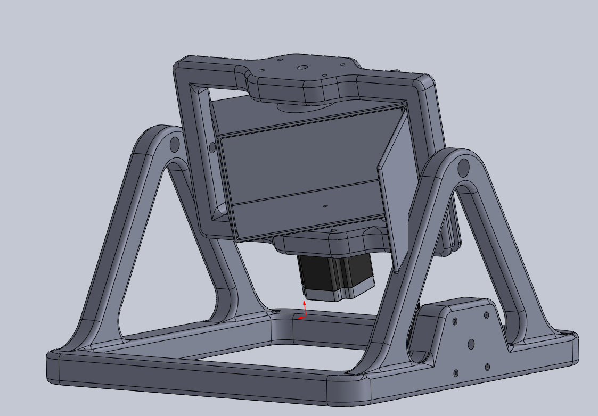
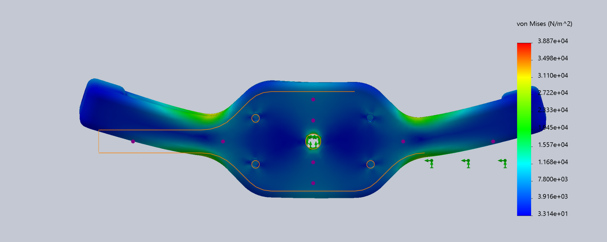
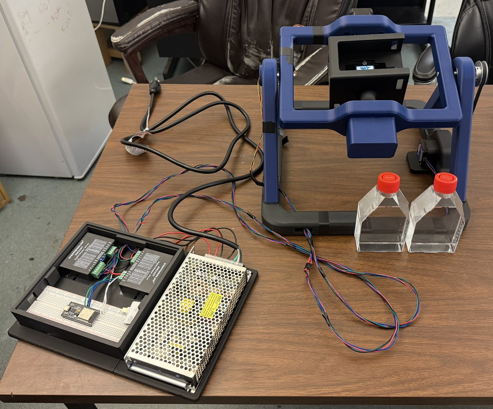
The external controller and power electronics stay outside the incubator, preserving the sterile, temperature-controlled environment inside. An ESP32 drives two stepper channels through dedicated drivers; the firmware boots stopped and disarmed, requires an explicit ARM, latches a software emergency stop, and disarms itself after 3.5 seconds without contact from the desktop application.
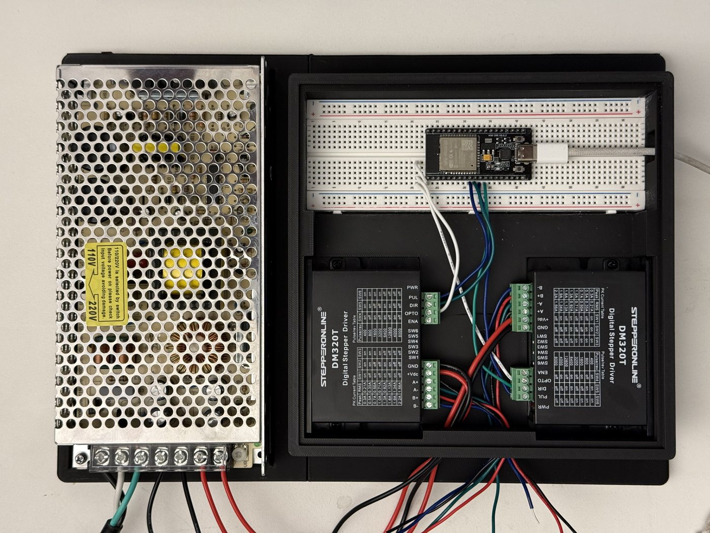
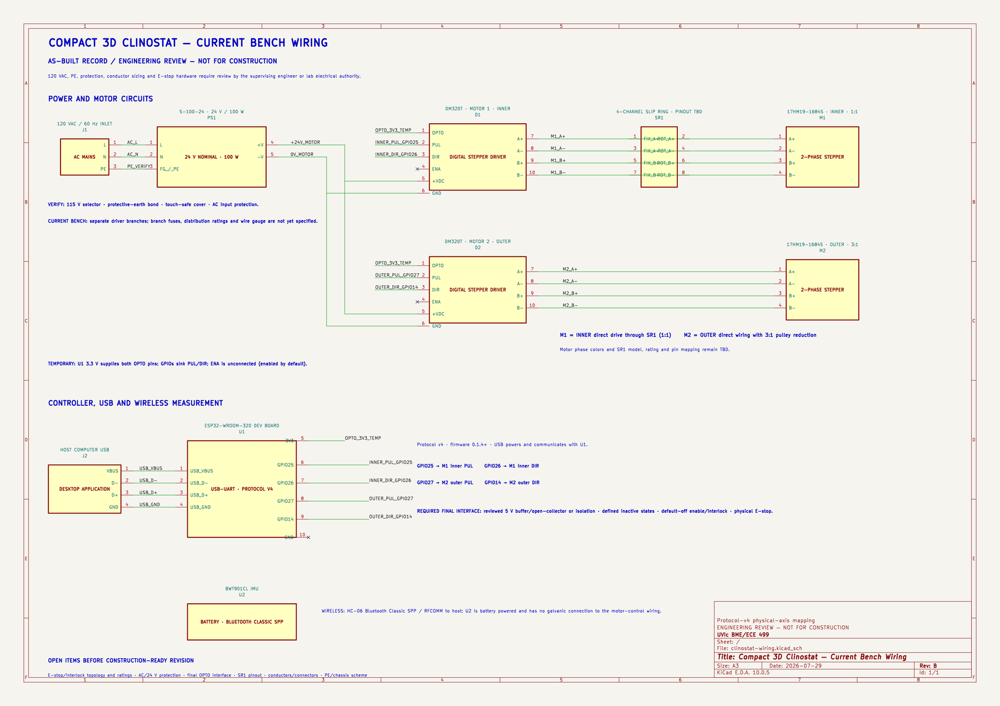
04 — Results & findings
The figures below come from a single preserved hardware run,
20260729_011743, recorded from a WitMotion BWT901CL IMU mounted in the sample
frame. Nothing here is simulated.
The instantaneous specific force on the sample never stops changing — that is the whole point. What matters is the running mean. Over 152 seconds of two-axis rotation the cumulative time-averaged gravity vector converged to a magnitude of 0.0220 g, roughly 2% of normal Earth gravity, and was still trending downward when the run ended.
This is an IMU-derived, time-weighted estimate from measured specific force. It is not an encoder measurement, and it is not a claim of biological microgravity.
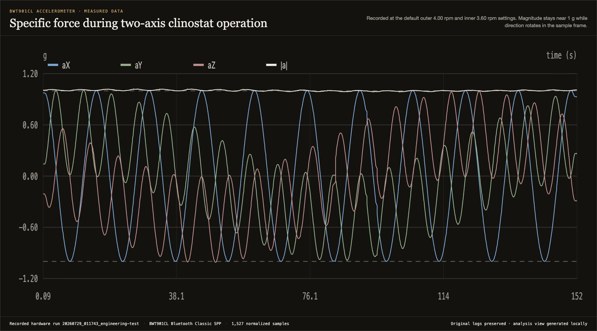
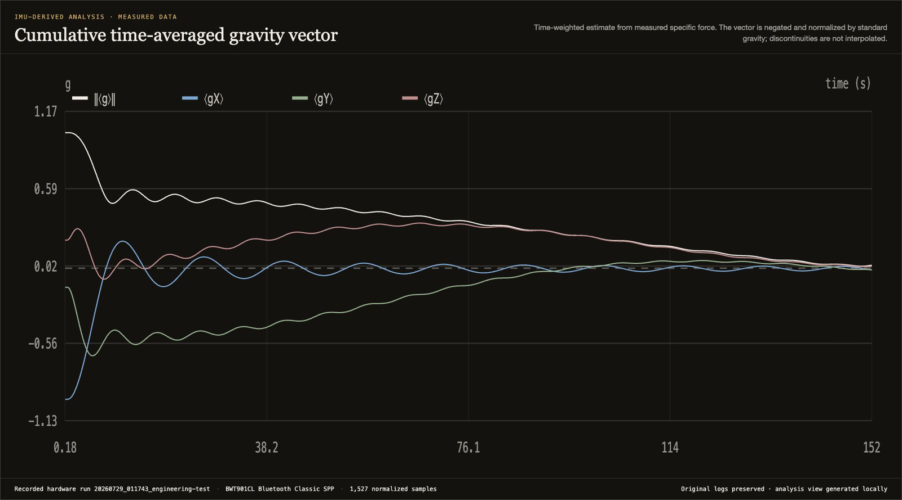
Averaging only works if the sample actually visits every orientation. Plotting the measured gravity direction in the sample's own coordinate frame traces a path that sweeps the sphere rather than settling into a groove — the geometric condition that makes the time-average meaningful.
Fused orientation from the IMU gives real-time roll, pitch, and yaw of the sample chamber relative to the lab frame, which is what lets us verify coverage instead of assuming it.
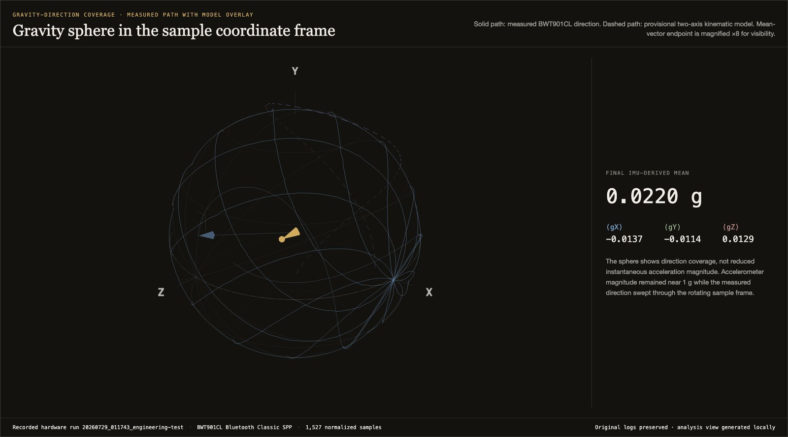
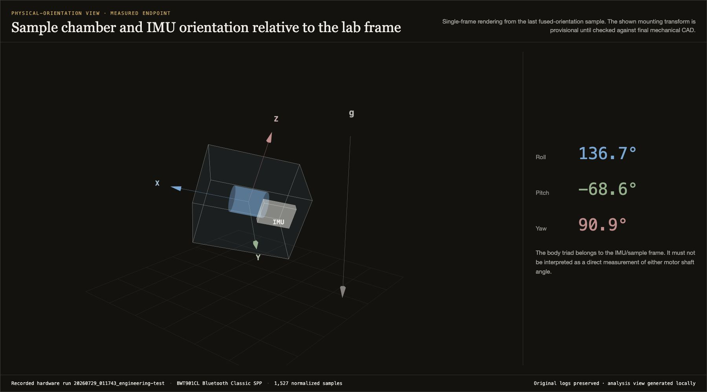
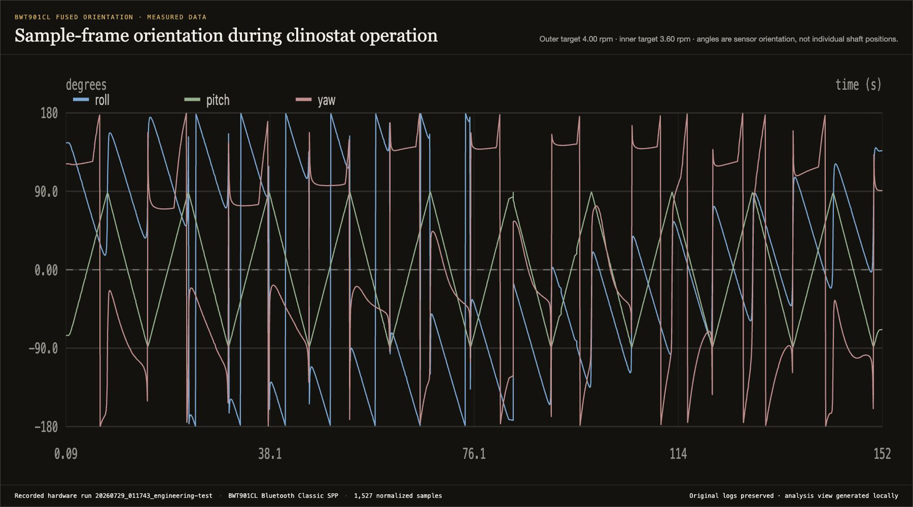
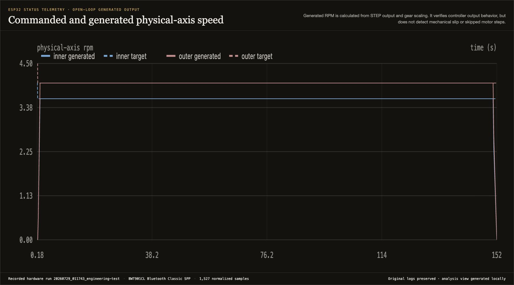
05 — Control software
A clinostat that cannot prove what it did is not a research tool. We built a desktop control application that owns the experiment lifecycle, records losslessly to self-describing CSV/JSON, and treats every displayed number as evidence rather than decoration.
Live, read-only
The hosted monitor mirrors the current experiment, controller, and IMU telemetry from the bench. It is deliberately read-only — no route accepts a motor, experiment, or emergency-stop command. The desktop application and the physical safety chain remain the only control authority.
Open the live web appIf the bench is idle you will see the last published snapshot or an empty room — network status is never an emergency-stop indication.
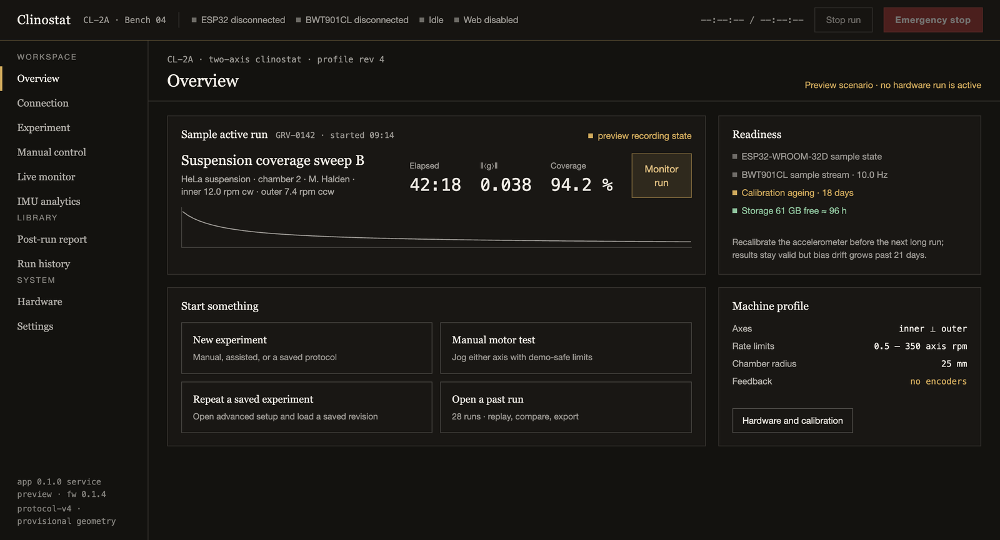
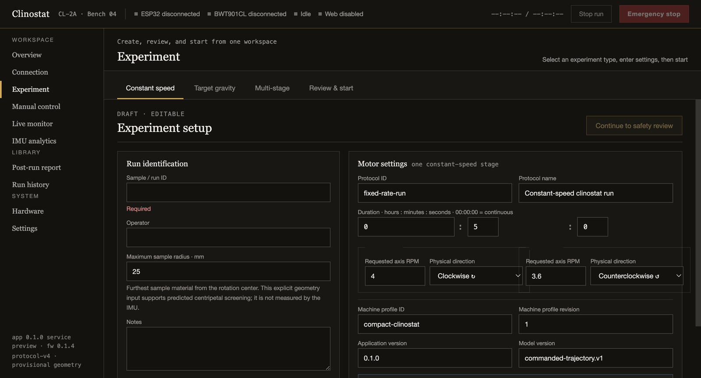
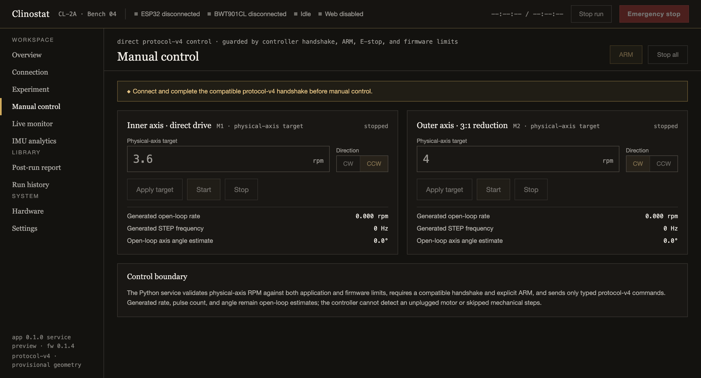
Screens captured from the browser preview build using demonstration data; hardware values appear only when a controller is connected.
Packaged macOS and Windows builds of the control application are being prepared and will be published here once signed.
06 — Final report
The final report covers the complete design rationale, the mathematical model behind the gravity averaging, the commissioning procedure, and the full results analysis.
07 — Acknowledgment
A capstone runs on borrowed expertise, borrowed printer time, and a lot of patience. We would like to express special appreciation to:
For guidance throughout the project.
For technical advice and generous amounts of time.
For 3D printing — and emotional support.
For innovative ideas and design advice.
08 — References